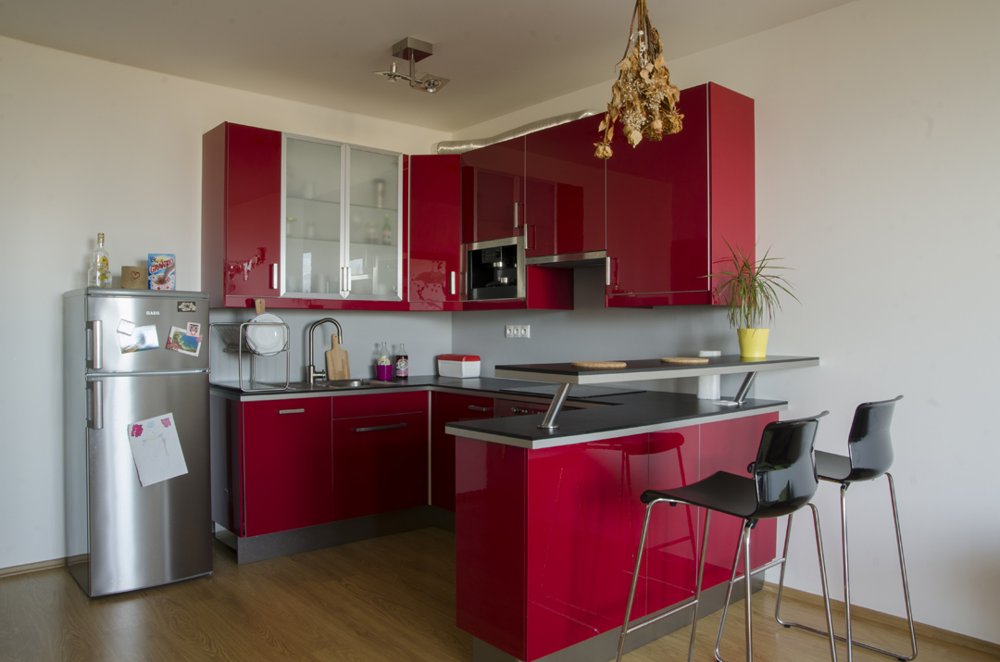
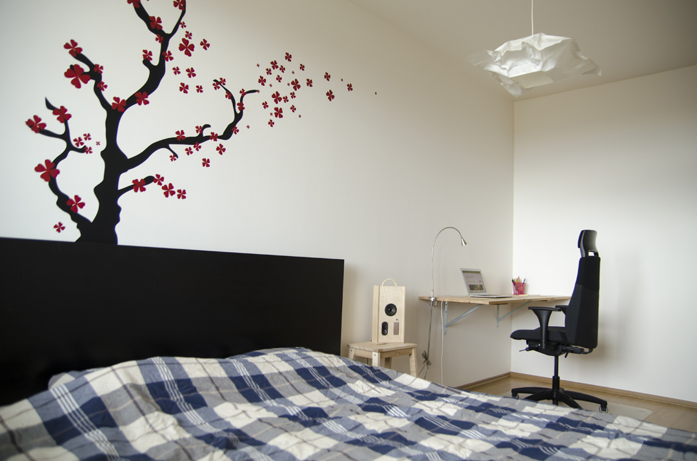
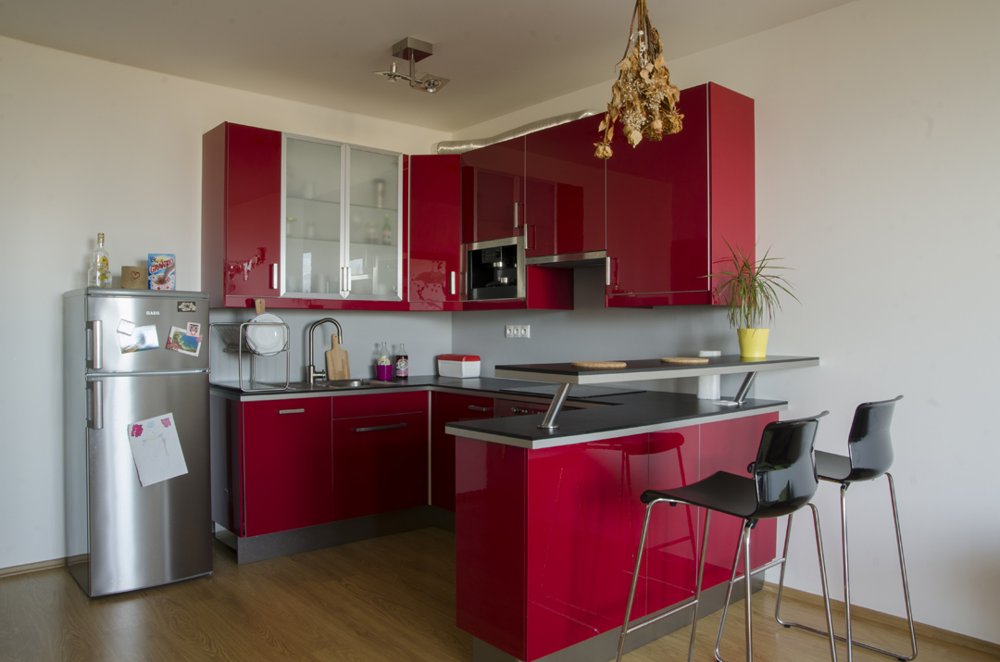
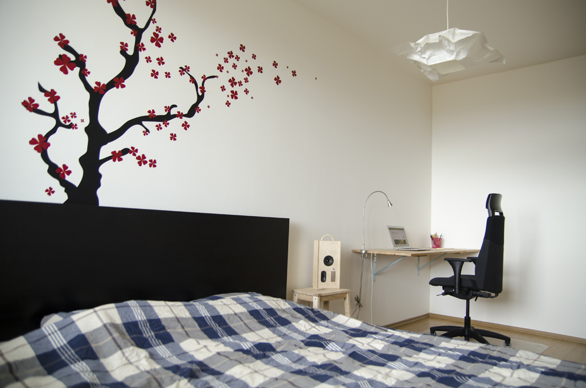

Nabízím k pronájmu plně vybavený 2kk byt (50m2) s lodžií a krytým garážovým stáním, mezi Prosekem a Letňany, v ulici Kytlická.
Vybavení
- Ložnice: manželská postel s matrací, stůl a malá knihovna
- Obývací pokoj: stylový futon, konferenční stolek, TV stolek, komoda
- Kuchyň: moderní Ikea kuchyň v červené barvě s lesklým povrchem, vestavěné spotřebiče - kombinovaná mikrovlnná trouba, přístroj na espresso, myčka, lednice
- Předsíň: velká vestavěná skříň na míru
- Koupelna s vanou: pračka a úložné prostory
Vybavení bytu je možné nechat po domluvě odvézt. Upřednostňujeme dlouhodobý pronájem min. na 1 rok. Byt je vhodný pro 2 osoby bez zvířat (drobní domácí mazlíčci nejsou překážkou).
Internet
Vysokorychlostní internet od sdružení jablonka.cz v ceně.
Okolí
V okolí se nachází příjemná vinárna a večerka (5 min chůze), dále Billa a Penny, restaurace, pizzerie, poliklinika Prosek a park Přátelství (max. 10 min chůze).
Cena
16 000 Kč + 800 Kč elektřina
Základní cena zahrnuje zálohy na vodu a TUV.
Kontakt
Email: josef.rousek@gmail.com
Telefon: 608 583 036
Fotografie
 


